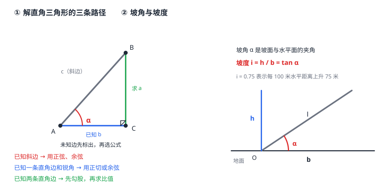

解直角三角形
解直角三角形，就是在一个直角三角形里，知道两个元素（边或锐角）求另外两个。直角是已知的，所以只剩一条斜边和两个锐角待求，能用的工具只有三件：勾股定理管两边求第三边，正弦余弦管「已知斜边和一条边求另一条边」，正切管「已知一条直角边和一条直角边求比值」。四条路径的选择只有一句话：已知斜边就用正弦或余弦，已知一条直角边和锐角就用正切或余弦，两条直角边已知就先勾股再求比值。 求完之后一定要用勾股回代验算——这是解直角三角形唯一可靠的自我检查。
| 所属主题 | 锐角三角函数 |
|---|---|
| 所属模块 | 几何 |
| 课标学段 | 第四学段（7~9 年级） |
| 前置知识 | 锐角三角函数（正弦·余弦·正切）、直角三角形与勾股定理 |
| 核心素养 | 推理能力模型观念几何直观 |
教材定位
人民教育出版社《人教版（2024版）义务教育教科书·数学》
九年级下册第32章 锐角三角函数32.2 解直角三角形及其应用
对应九下 32.2 之下的 32.2.1 解直角三角形。
说明
一个直角三角形有五个元素：两条直角边、斜边、两个锐角。直角已知，所以问题变成「知道其中两个，求另外几个」。由于直角是现成的，这个三角形永远不会退化、答案永远唯一——这是解直角三角形比一般三角形简单的地方，也是它能成为初中计算主力题型的原因。
四条路径对应四种已知情况。第一条：已知斜边和一个锐角。斜边是三条边里最长的那一条，在正弦、余弦的分母上，直接套 \sin\alpha=\dfrac\text对边\text斜边 或 \cos\alpha=\dfrac\text邻边\text斜边 即可求出两条直角边。第二条：已知一条直角边和一个锐角。此时斜边还未知，若用正弦就得先知道斜边，所以改用 \tan\alpha=\dfrac\text对边\text邻边 求出另一条直角边，再用 \cos\alpha 求斜边；或者直接用 \cos\alpha=\dfrac\text邻边\text斜边 反过来求斜边再求另一边。第三条：已知两条直角边。先用勾股定理求斜边，再用正切或正弦余弦求需要的比值。第四条：已知斜边和一条直角边。用正弦或余弦求出另一条直角边，锐角则用正切求出它的三角函数值。
每个锐角都有两条可能的身份，同一个三角形里的两个锐角互余（90^\circ），所以知道了一个锐角，另一个就是 90^\circ 减去它，不必再算。
解完之后必须验算：把求出的三条边代回勾股定理，看是否满足 a^2+b^2=c^2。如果算出的边出现负数、或者代回勾股不成立，说明要么选错了公式（用了当前角的邻边当对边），要么角度单位用错了（度与弧度），要么题目本身给出的数据互相矛盾——回代是唯一能把这三种情况区分开的办法。
使用场景
斜坡测量：已知坡角与斜坡长，求铅直高度与水平长度；或已知坡角与水平长度，求斜坡长度。这是解直角三角形最典型的工业场景。
河宽与塔高测量：站在岸边看对岸的树顶，知道树高与仰角，或知道到树顶的距离与仰角，都能求出河宽或塔高。
注意点
第一步永远是「认边」，不是「套公式」。把三角形的三个顶点记牢哪个是直角、要求的是哪个锐角，然后对着这个角把对边、邻边、斜边指出来。认错边，公式再熟也没用。
已知斜边时不要用正切。正切的分母是邻边，斜边在正切里根本不出现，硬套会得出与斜边无关的结果。凡是题里给了斜边，就该用正弦或余弦。
锐角三角函数只对锐角成立。若题目给的角是钝角（大于 90^\circ），这套工具用不上，要先想办法转成锐角（作垂线、找补角）或改用其他方法。
结果要过实际意义这一关：边长必须是正数，长度与题给的数据要相称（例如斜边必然是最长边，求出的斜边若比直角边还短，说明算错了）。
证明

图 1：左——解直角三角形的三条路径，认边是第一步；右——坡角与坡度：坡度 i = h/b 正是坡角的正切
证明
结论 1已知一条直角边和一个锐角时，用正切或余弦都能求边；已知斜边和一个锐角时，用正弦或余弦。
在直角三角形 \triangle ABC 中（\angle C=90^\circ），设 \angle A=\alpha，记 BC=a（对 \alpha）、AC=b（邻 \alpha）、AB=c（斜边）。按定义 \tan\alpha=a/b、\sin\alpha=a/c、\cos\alpha=b/c。若已知 b 与 \alpha，则 a=b\tan\alpha（用正切），也可用 c=b/\cos\alpha、a=\sqrtc^2-b^2（用余弦）；若已知 c 与 \alpha，则 a=c\sin\alpha、b=c\cos\alpha。可见「已知什么」直接决定「用哪个函数」。
关键一步三个函数里恰好有一个是「对边比邻边」的正切，它能直接接住「一条直角边 + 一个角」；另外两个都带斜边，得先绕道求出斜边。
结论 2已知两条直角边时，先用勾股定理求第三条边，再用三角函数求角。
设 a、b 为两条直角边，c 为斜边。由勾股定理 c=\sqrta^2+b^2，得到完整的三边长。再用正切 \tan\alpha=a/b 求出 \alpha 的值——注意此时若 \alpha 较小，a/b 也就小，两者必须对应，否则会算到另一个锐角上去。
关键一步先用勾股补齐斜边，再算角。正切值本身不告诉你角的大小，必须结合「\alpha 是较小的那个锐角还是较大的那个」来定位。
结论 3初中阶段不能「由两条边求角」。
三角函数给出的是比值（一个数），而不是角度本身。已知两边虽然能确定这个三角形，但要由 \tan\alpha=a/b 反求出 \alpha 的具体度数，需要求三角函数值对应的角，那要用到反三角函数（或查表），这超出初中范围。所以初中解直角三角形必须至少给出一个锐角。
关键一步比值到角度的反向映射在初中没有工具。这条限制决定了做选择题时看到「已知两边求角」要警惕——它通常需要反三角函数。
结论 4解完必须用勾股定理回代验算。
设算出的三边为 a、b、c，检验 a^2+b^2=c^2 是否成立。若不成立，说明某一步用错了函数或选错了对应关系（最常见是把邻边当对边）。勾股定理是三条边之间的整体约束，任何一步算错都会让这个等式失衡，所以它是自查的利器。
关键一步等式 a^2+b^2=c^2 对三条边同时成立。它能把「某一条边算错」和「全都算错但比例还对」这两类错误区分开——前者等式失衡，后者等式成立但角不对。
动手实验
找一张 A4 纸，量出它的长与宽，算出对角线的长度（用尺量，再用勾股验算），再算出对角线与长边的夹角的正切值（对角线长除以长边宽）。然后把纸对折再量——对角线与长边的比值不变，这就是「比值只由角决定」的日常版本。最后换一个更窄的长方形（长宽比 2:1），算出的正切值变大，说明图变陡了——坡度与角度是同一件事的两面。
解题思路
解直角三角形五步：① 画草图并标出直角、已知量、求什么；② 把要求的锐角单独记成 \alpha，对着它指认对边、邻边、斜边；③ 按「已知斜边用正弦余弦、已知一条直角边和锐角用正切或余弦、已知两条直角边先用勾股」的规则选公式；④ 逐步求解，求完一条边就顺手记下；⑤ 用勾股定理回代验算，再检查边长为正、斜边最长。
求锐角本身的三角函数值时（不是求角度数）：已知两条直角边就直接用正切（对边比邻边）；已知斜边和一条直角边就用正弦或余弦。注意题目若要求「这个角是多少度」，初中无法完成，只能给出三角函数值。
结果表达要带单位并取合理形式：长度写成 \sqrt3 的形式或小数（依题目要求），比例写成最简分数；最后用一句话交代求的是什么，比如「斜坡的铅直高度为 10 米」。
按场景的例题
例 1（场景：测量与工程） 已知坡角与斜坡长求铅直高度和水平长度
一段斜坡的坡角为 30^\circ（坡面与水平面的夹角），斜坡长 20 米。求这段斜坡的铅直高度和它在水平方向上的投影长度。
解：作直角三角形：斜坡是斜边 c=20，坡角 \alpha=30^\circ，铅直高度是对边 h，水平投影是邻边 b。已知斜边，用正弦、余弦各求一条直角边。h=c\sin\alpha=20×\sin30^\circ=20×\dfrac12=10（米）。b=c\cos\alpha=20×\cos30^\circ=20×\sqrt3/2=10\sqrt3（米）。勾股回代：10^2+(10\sqrt3)^2=100+300=400=20^2，与斜边相符 \checkmark。
答：铅直高度 10 米，水平投影长 10\sqrt3 米。
例 2（场景：图形设计） 已知一条直角边与锐角求其余边
在直角三角形 ABC 中，\angle C=90^\circ，\angle A=45^\circ，AC=6 厘米。求 BC 与 AB 的长。
解：以 \angle A 为准：BC 是对边，AC=6 是邻边，AB 是斜边。已知的是一条直角边和锐角，斜边未知，用正切求另一条直角边：\tan45^\circ=BC/AC=BC/6=1，所以 BC=6（厘米）。再用余弦求斜边：\cos45^\circ=AC/AB=6/AB=\sqrt2/2，所以 AB=6×2/\sqrt2=6\sqrt2（厘米）。勾股回代：6^2+6^2=72=(6\sqrt2)^2，且斜边确实是最长边 \checkmark。
答：BC=6 厘米，AB=6\sqrt2 厘米。
例 3（场景：生活优化） 比较两段直梯的陡缓
两段直梯踩在同样的高度上：一段梯子的两条直角边是 5 米和 12 米，另一段是 8 米和 15 米。哪一段更陡？求出两段梯子各自的斜边长，以及与地面（长边）所成锐角的正切值。
解：先算斜边。第一段：c_1=\sqrt5^2+12^2=\sqrt25+144=\sqrt169=13（米）。第二段：c_2=\sqrt8^2+15^2=\sqrt64+225=\sqrt289=17（米）。再求梯子与地面所成锐角的正切值：梯子与地面（长边）所成的角，其对边是短边、邻边是长边，所以 \tan\alpha_1=5/12\approx 0.417，\tan\alpha_2=8/15\approx 0.533。正切值越大锐角越大、梯子越陡，所以第二段（8 米和 15 米那段）更陡。回代勾股：5^2+12^2=169=13^2，8^2+15^2=289=17^2，两条都成立 \checkmark。
答：斜边分别是 13 米与 17 米；正切值分别是 5/12 与 8/15，8 米和 15 米那段更陡。
常用推论
解直角三角形其实是勾股定理与相似三角形的「合体」：勾股负责两条边之间的数量关系，相似负责角与边之比的固定性，三角函数只是把那个比值写成了一个可以查的符号。三件工具分工明确，所以每种已知情况都恰好有一条最短路径——先看已知了什么，再决定用哪件工具，而不是拿到题就套公式。
「坡度」这个工程说法，本质上就是坡角的正切：坡度 i=h/b 表示每前进 b 米水平距离上升 h 米，与「与地面夹角的正切」是同一个数。反过来看，正切大于 1 就意味着坡比 45^\circ 还陡，这正是工程上把坡度写成百分数（如 i=0.15 表示 15%）的依据——同一个比值，换一套单位就是另一个领域的行话。
解直角三角形是初中几何里少数「纯计算」的题型，它的规范价值在于流程固定：画图、认边、选公式、代入、回代。这套流程一旦形成条件反射，坡度、仰角、视平线、水位差这些应用题就都成了同一套动作的换皮——难点不在计算，在于把实际问题翻译成那副直角三角形。
易错点
错已知斜边 c 和锐角 \alpha 时，用 \tan\alpha=a/b 求对边 a。
为什么错正切式子里根本没有斜边，分母是对边与邻边之比，式中不含 c，无法直接求解。已知斜边时正弦、余弦才是直接可用的（分母就是斜边）。
正确已知斜边用 a=c\sin\alpha、b=c\cos\alpha；已知一条直角边和锐角才用 \tan\alpha=a/b。
错算出 BC=6 后，把 BC 当成斜边继续用 \sin\alpha=AC/BC。
为什么错斜边是直角所对的边，必须是最长边。直角在 C，斜边只能是 AB。把直角边当斜边用，公式里的分母就换了含义，得到的数毫无意义。
正确先指认斜边：直角所对的边是斜边；用完检查「斜边最长」这一条。
错题目给两边求那个锐角是多少度，于是去查三角函数表或解方程求角度。
为什么错把角「反查」成度数需要反三角函数（或解方程），初中阶段没有这个工具。这类题在初中只能求出这个角的三角函数值，不能给出角度数。
正确初中只求边与三角函数值；真要求角度数，要到高中用反三角函数或解方程。
直观理解
解直角三角形像用一把三角尺量世界：把要量的东西摆成直角三角形的三个角色，问题就塌成「一条边和两个角」的换算。斜边是「全程」，直角边是「水平走的那段」和「往上爬的那段」；正弦、余弦、正切则是三种不同的「取景方式」——从对边看、从邻边看、从两者比例看。选哪把尺子，取决于你手上已经握着什么：握着全程（斜边）就用俯仰角定标尺，握着一段就用比例定标尺，握着两段就先量出全程。图 1 右边的坡角示意其实说的就是这件事：斜坡、铅直、水平这三个量构成一副直角三角形，而「坡度」不过是其中两条边的比。